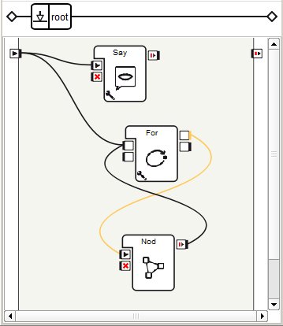
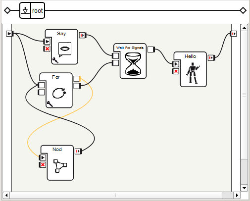
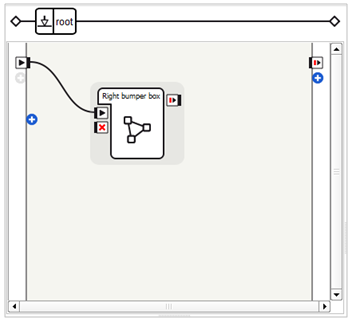
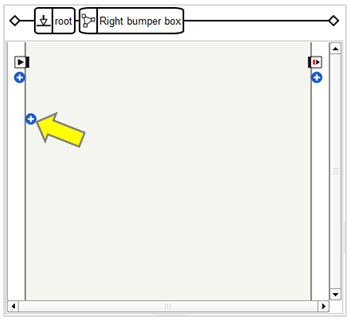
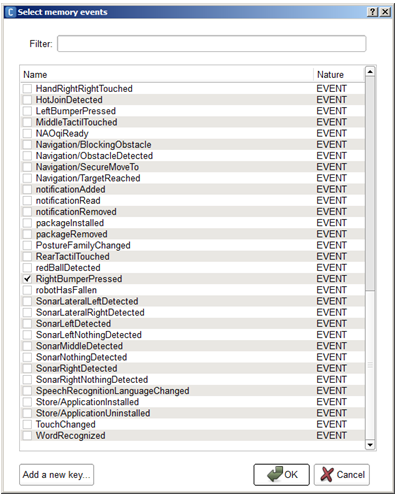
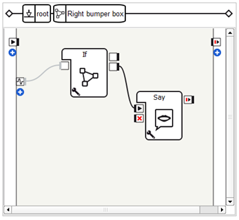
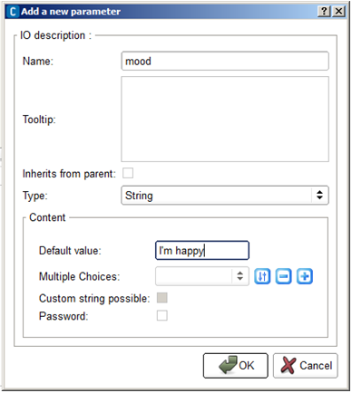
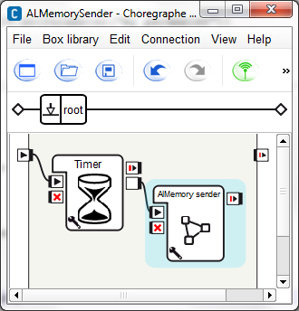
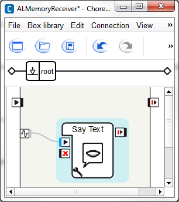

Boxes¶
Using Flow Control boxes¶
Create the following behavior: while introducing himself, NAO nods two times, then when both are done, NAO starts to wave.
| Step | Action | Further help |
|---|---|---|
Drag and drop a Audio> Voice > Say box. Write NAO’s introduction sentence (e.g. “Hello I am NAO the little robot and I am ready to serve you, master!”) Connect its input to the main input of the behavior. |
_ |
|
Create a new Timeline box, call it “Nod”. Create a simple nodding movement behavior with its Motion Timeline. Connect its input to the main input of the behavior. |
||
| Test | If you click the  Play button, NAO nods once
and introduces himself. Play button, NAO nods once
and introduces himself. |
If you are on a real robot, you have to stiffen your robot first, see How to stiffen your NAO. |
Add a Flow Control > For box to your behavior. Set its Final value parameter to 2. Connect it to your “Nod” box as below (outputs with inputs):  |
||
| Test | NAO nods two times and talk. It’s not bad but we also want NAO to start waving after he has finished nodding and talking. This is quite simple: a Wait For Signals box should be used. |
|
Add a Flow Control > Wait For Signals box. Connect the onStopped output of Say box to its Signal 1 input and the onStopped output of For to its Signal 2 input. The Wait For Signals box stimulates its output once the two inputs are stimulated. |
||
Add a Motions > Animations > Hello box.  |
||
| Test | NAO starts waving after he has finished nodding and talking! | |
| As a final exercise, you could create a single box that perform all these actions. | How to group several boxes into a single one |
Simple modifications of a box script¶
All the boxes in Choregraphe have their own script, so you can easily edit them and modify the script.
Description of the script logic¶
The script programming language in Choregraphe is Python. Each box in Choregraphe is a module. Briefly, a module is like an application, completely independent, that can run on its own and communicate easily with other modules.
The box creation is done in several steps:
- Instantiation of the box
- Registration of the box as a module so it can be called from other boxes through linking
- Box initialization
The first two steps are automatic: you have no control over the script. But you have full control over the third step. Actually, this step executes some part of code you have written in the box script.
Description of a box script¶
To examine a box script, drag and drop the Set LEDs box onto the diagram panel and double-click on it.
The script window is displayed, showing the following script:
class MyClass(GeneratedClass):
def __init__(self):
GeneratedClass.__init__(self)
def onLoad(self):
#~ puts code for box initialization here
pass
def onUnload(self):
#~ puts code for box cleanup here
pass
def onInput_onSet(self):
ALLeds.fade(self.getParameter("LEDs group"), self.getParameter("Intensity (%)")/100., self.getParameter("Duration (s)"))
self.onReady() # activate output of the box
This box orders the LEDs of a group of LEDs (ear LEDs by default) to switch on (onStart input) in the given amount of time (default 1 second).
When writing script, you must remember that you are defining methods of a module class. A method is a function the program calls to execute each time the same action.
There are 4 methods in the Set LEDs script:
- initialize
- onLoad
- onUnload
- onInput_onSet
How does the Set LEDs script work¶
When the behavior starts to play, the initialize method is executed first : GeneratedClass.__init__(self). It is a function which resets the basic box parameters that are common to all the boxes in Choregraphe. After that, the box is a “module” running in NAOqi, on the robot. The box has also initialized all its “parameters” so they are now available in the script. This method is called once per behavior. You can initialize objects that you want to have during the whole behavior (proxies for instance).
Warning
You should never modify the first 3 lines of a script box as they are mandatory.
onLoad method: This method is called when the box flow diagram is loading. It is necessarily called after the __init__ method of all the boxes of the current behavior. When a flow diagram is loading, this method is called on each box of current level before any IO can be stimulated.
onUnload method: This method is called when the box flow diagram is unloading. When a flow diagram is unloading, this method is called on each box of current level. After the flow diagram unloading, boxes are disabled and cannot receive any event on their inputs. Note that the method usually stop everything running in the script, that is what you expect of the onStop input. That is why the latter calls onUnload by default.
onInput_onSet method: This method is called when the onStart is stimulated. It calls ALLeds.fade(self.getParameter(“Leds name”), self.getParameter(“Intensity”), self.getParameter(“Duration”)) . This call to the ALLeds module orders the given group of LEDs to switch on, in a given time, to the given intensity. See that we never use hardcoded values, as we want the user to be able to change those values easily through Choregraphe interface. At the end of the onStart method, self.onStopped() stimulates the onStopped output of the “Switch LEDs” box.
Modifying the script¶
Modify the “Set LEDs” box script in order to make NAO’s LEDs group flash five times before switching off.
To do so:
- Modify the script box as follows:
class MyClass(GeneratedClass):
def __init__(self):
GeneratedClass.__init__(self)
self.max = 5
def onLoad(self):
#~ puts code for box initialization here
pass
def onUnload(self):
self.i = self.max
#~ puts code for box cleanup here
pass
def onInput_onSet(self):
self.i = 1
while (self.i < self.max):
ALLeds.fade(self.getParameter("LEDs group"), self.getParameter("Intensity (%)")/100., self.getParameter("Duration (s)"))
ALLeds.fade(self.getParameter("LEDs group"), 0, self.getParameter("Duration (s)"))
self.i += 1
self.onUnload() # activate output of the box
pass
We have used a “while” function in the onStart method to achieve our goal.
When the onSet input is stimulated, NAO will blink 5 times and switch off its LEDs.
Note that a lot of things could be improved in this box: prevent the box from entering the while loop several times (if onSet is stimulated more than once), make the “self.max” count appears as a parameter... Try to modify the scripts of Choregraphe’s default library to create awesome behaviors!
Creating a box script from scratch using parameters¶
Introduction¶
In Choregraphe, it is possible to write your own box, defining their complete workings.
We have already seen how a script works in the Simple modifications of a box script tutorial. As explained above, the first two steps are automatic, the user has no control over it from the script. The second step is done from the links the user has created. But, you have full control over the third step which executes some part of the code you have written in the script.
When writing script, you must remember that you are defining methods of a module class. Attributes, subscribing on ALMemory events... the possibilities are wide open.
Once the box is initialized, the box is ready to be loaded. Whenever the box is loaded and an input is stimulated, a method is called in your script: “onInput_<name>”. This is how you decide what to do when an input is stimulated.
When writing script, you can decide at any time to stimulate an output. The method name that is called is <outputName>(parameter).
How does it work¶
For instance:
- If you have an onStopped output that is of “bang” type, calling onStopped() should do the job.
- If you have a faceDetected(string) output, you can call faceDetected(“Robert”) to warn that Robert has been detected.
The generated script of a new box would look like this:
class MyClass(GeneratedClass):
def __init__(self):
GeneratedClass.__init__(self)
def onLoad(self):
#~ puts code for box initialization here
pass
def onUnload(self):
#~ puts code for box cleanup here
pass
def onInput_onStart(self):
#~ self.onStopped() #~ activate output of the box
pass
def onInput_onStop(self):
self.onUnload() #~ it is recommended to call onUnload of this box in a onStop method, as the code written in onUnload is used to stop the box as well
pass
Beyond the initialize method, you have one method associated with each of the box inputs.
The first 3 lines are completely mandatory, and modifying then will lead to strange behavior. What you should modify is the content of the initialize method. You can initialize attributes (such as variables, or proxies to other modules). You should do everything that you only want to do once, because this box will not be destroyed before the end of this behavior.
You will see an “onLoad” method. This is called whenever the box is loaded, which can be caused by one of the three following events:
The behavior is started and the box is at the root level. The box is contained in a behavior keyframe that is being loaded. The box is contained in another box (meaning the latter box has a “flow diagram” offspring), and we stimulated an input of nature “onStart” on the parent box.
Note
This method is called when the box is loaded, so it is strongly advised to avoid heavy code here. Meaning that if a box loading takes too long, the whole behavior will be slowed down. If you are in a Timeline, you may even lose real-time.
You can also see an “onUnload” method. This is called whenever the box is unloaded, which can be caused by one of the two events:
The behavior is stopped. The box is contained in a behavior keyframe, and another keyframe of the same layer is being loaded (as the keyframe parent of the current box needs to be unloaded). The box is contained in another box (meaning the latter box has a “flow diagram” offspring), and we stimulated an input of nature “onStop” on the parent box.
Note
This allows you to warn other modules that your box is about to be unloaded and can therefore be very useful. For now you can probably forget about it, you will not need to use this function for simple boxes.
And what about the inputs method? Well the possibilities are unlimited. You are running in separate threads, so take your time, do heavy calculation, it should not affect the playing behavior... Remember that your output(s) will not be stimulated unless you explicitly do so. Meaning you write “onStopped” somewhere in your code. So if you use several script boxes that you have written, and you do not understand why the signal never comes out one of your box, the cause should not be hard to find: you forgot to call the output once your processing is done! Yes it is painful, but this way you can really decide when you want it to be stimulated, which allows you to do powerful things (and also use several outputs as you wish).
Example¶
- You find the LEDs of your robot very nice, but you would like to use script to switch them on. Well, what should you do? First, read the ALLeds documentation: this is the module that allows the user to turn on/off the LEDs. If you read the documentation, you should find that the methods are quite simple. For instance, turning the left feet LEDs requires the following command: setIntensity(“LeftFootLeds”, r) with r between 0 and 1.
So, what about running a little script to increase and decrease intensity over time, with self.step = 0.02 for instance. A classic Python script would look like this:
r = 0
while (r+ self.step < 1):
r = r +self.step
ALLeds.setIntensity ("LeftFootLeds", r)
time.sleep(0.01)
while (r - self.step > 0):
r = r - self.step
ALLeds.setIntensity ("LeftFootLeds", r)
time.sleep(0.01)
- Now, create a new box called “RightEarLeds”.
Note
If you do not know how to do this, please see How to create a Script box.
Note
Three standard entries to your box are automatically created: onStart input, onStop input and onStopped output. You can modify these entries and create new ones by editing the box.
- Double-click on the box to edit its script box.
- Write the script to increase and decrease intensity over time. The “RightEarLeds” script should look like this:
class MyClass(GeneratedClass):
def __init__(self):
GeneratedClass.__init__(self)
self.ledsName = "RightEarLeds"
self.step = 0.01
def onLoad(self):
#~ puts code for box initialization here
self.isRunning = False
pass
def onUnload(self):
#~ puts code for box cleanup here
pass
def onInput_onStart(self):
#~ self.onStopped() #~ activate output of the box
if(self.isRunning):
return
self.isRunning = True
r = 0
while (r + self.step < 1 and self.isRunning):
r += self.step
ALLeds.setIntensity(self.ledsName, r)
time.sleep(self.step)
while (r - self.step > 0 and self.isRunning):
r -= self.step
ALLeds.setIntensity(self.ledsName, r)
time.sleep(self.step)
self.isRunning = False
self.onStopped()
def onInput_onStop(self):
self.onStopped() #~ it is recommended to call onUnload of this box in a onStop method, as the code written in onUnload is used to stop the box as well
pass
Note
Note the code that we had to put in onUnload to make sure the box exits its loop if we call onStop or if the flow diagram is unloaded.
Using parameters¶
Parameters allow you to customize the way the box works. After having created the parameters of the box, you will not have to edit a single line of script to use it.
To create the parameters of the box:
Right click on the box and select the “Edit box” option.
First, we want to be able to change the group of LEDs we are working on, the left or right ear LEDs for instance. To do so, add a new parameter by clicking on the “+” icon, on the right side of the parameters list which should be empty.
Its name can be “LEDs name” for instance. A quick Tooltip to explain what it is going to do would be good. The parameter we want to add is a “string”, so select the ‘String’ option in the “Type” field.
In the Content area, you can just enter “RightEarLeds” as a default value but it would not be very nice, as you have actually various other possibilities. It is better to enter several choices in the “Multiple choices” field. To do so, click on the “+” icon then enter “RightEarLeds”. Click on OK then click again on the “+” icon to add the “LeftEarLEds” option for instance.
As we cannot enter all the possibilities (there are too many), we can also check the “Custom string possible” option, which will allow you to enter manually another group directly from the box, without entering again on its properties.
Now, the only thing to do is to enter the script. To do so, right click on the bow then select the “Edit box script” option.
Remove the self.ledsName reference, and replace it with an access to a parameter. To do so, select the reference then right click on it to select “Insert Function > Get parameter > leds name. It should write the following script:
> self.getParameter(“LEDs name”)
The script should look like this at the end:
class MyClass(GeneratedClass):
def __init__(self):
GeneratedClass.__init__(self)
self.step = 0.01
def onLoad(self):
#~ puts code for box initialization here
self.isRunning = False
pass
def onUnload(self):
#~ puts code for box cleanup here
pass
def onInput_onStart(self):
#~ self.onStopped() #~ activate output of the box
if(self.isRunning):
return
self.isRunning = True
r = 0
while (r + self.step < 1 and self.isRunning):
r += self.step
ALLeds.setIntensity(self.getParameter("Leds name"), r)
time.sleep(self.step)
while (r - self.step > 0 and self.isRunning):
r -= self.step
ALLeds.setIntensity(self.getParameter("Leds name"), r)
time.sleep(self.step)
self.isRunning = False
self.onStopped()
def onInput_onStop(self):
self.onStopped() #~ it is recommended to call onUnload of this box in a onStop method, as the code written in onUnload is used to stop the box as well
pass
- Now, you just have to on the wrench of the box to change the side of ear LEDs that will fade over time. As you can see, creating a box from scratch is not too complicated!
Creating a box to retrieve right bumper value using ALMemory¶
 Cannot be tested on a simulated robot.
Cannot be tested on a simulated robot.
This tutorial will show you how to retrieve an ALMemory value directly from your behavior.
| Step | Action | Further help |
|---|---|---|
| Create a Flow diagram box. | How to create a Flow diagram box | |
Link it to the beginning of the root behavior.  |
||
Double-click the box to display its content and click the Add an event from ALMemory button.  |
||
Select the RightBumperPressed event and click the OK button.  |
||
Drag and drop the Flow Control > If box onto your diagram and link it to the RightBumper input. Note This box is used to filter the event, the event will be transmitted to the rest of the diagram only if the value is equal to one so the rest of the diagram is executed only when the right bumper is pressed and not released. |
||
Drag and drop the Audio > Voice > Say box onto the diagram and link the onStart inputs to the second output of the If box.  |
||
| Get into the say box and change the text in the Localized Text box into “This is my right bumper”. | ||
| Click the Play button to start the behavior. |
||
Push the right bumper of the robot. Your NAO detects that its bumper were touched. |
You are now capable to retrieve an ALMemory value from any behavior.
Transmit a value from a behavior to another using ALMemory events¶
Cannot be tested on a simulated robot.
Create the two following behaviors and make them interact:
- a sender behavior that will raise an event, for example the current value of NAO’s mood,
- a receiver behavior that will receive the event and will make NAO say the value associated to it.
Writing a value in ALMemory¶
Let’s start with the sender module:
| Step | Action | Further help |
|---|---|---|
| Create a new script box, called, for example ALMemory sender. | How to create a Script box | |
| Add a parameter to the box. | How to add/remove inputs, outputs, parameters in a box | |
In the Add a new parameter menu, set:
Then click the Ok button twice.  |
||
Double click the box to display the box script. You can see that the structure of the box were automatically generated. |
||
In the onLoad method, create a proxy to the ALMemory module. self.memoryProxy = ALProxy("ALMemory")
|
||
In the onStart method, raise an event called myParameterValue with the parameter: mood. The code of the box should look like that: class MyClass(GeneratedClass):
def __init__(self):
GeneratedClass.__init__(self)
def onLoad(self):
self.memoryProxy = ALProxy("ALMemory")
pass
def onUnload(self):
#~ puts code for box cleanup here
pass
def onInput_onStart(self):
self.memoryProxy.raiseEvent("myParameterValue",self.getParameter("mood"))
pass
def onInput_onStop(self):
self.onUnload()#~ it is recommended to call onUnload of this box in a onStop
method, as the code written in onUnload is used to stop the box as well pass
|
||
| Close the script editor. | ||
| In your diagram, drag and drop the Flow Control > Time > Timer box. | ||
| Link it to the beginning of the root behavior. | ||
Link the second output of the timer box to the onStart input of the box that raise the event. Your diagram should look like that: Note The timer box will trigger the raise event each second. Click the |
||
| Choose File > Save project to save the first behavior. |
 parameter button if you want to slow down,
for example to 4 seconds.
parameter button if you want to slow down,
for example to 4 seconds.Reading a value from ALMemory¶
Let’s create the receiver behavior:
| Step | Action | Further help |
|---|---|---|
Choose File > New profile to create a new behavior.
Be sure that the previous one was correctly saved.
|
||
| Right click the Input border, and choose Add input from AlMemory. | Flow diagram Panel | |
| In the event name, write the name you have defined as first attribute of the method raiseEvent, in our case it is myParameterValue. | ||
| Click the OK button. | ||
We need now a Say text box, like the one inside the Say box. To do so:
|
||
Link it to the input you have just created. Your diagram should look like that:  |
||
| Choose File > Save project to save the behavior. |
Playing two interacting behaviors¶
Now we will execute the sender and the receiver together. To do it, we will need to execute the receiver using the behavior manager.
| Step | Action | Further help |
|---|---|---|
| Display the Behavior manager. | How to display/hide panels | |
In the Behavior manager panel, click on the Add current behavior button. The receiver behavior appears into the list of behavior that are on the robot. |
||
| In the Behavior list, start the receiver behavior by clicking on its Play button. | ||
| Open the sender behavior. | ||
Click the The sender raises the event according to Timer rhythm and the receiver retrieves the value. |
||
Click the You can hear your NAO repeating its new mood at the rhythm of the Timer parameter. |
You are now capable to send values from a behavior to another using the AlMemory module.